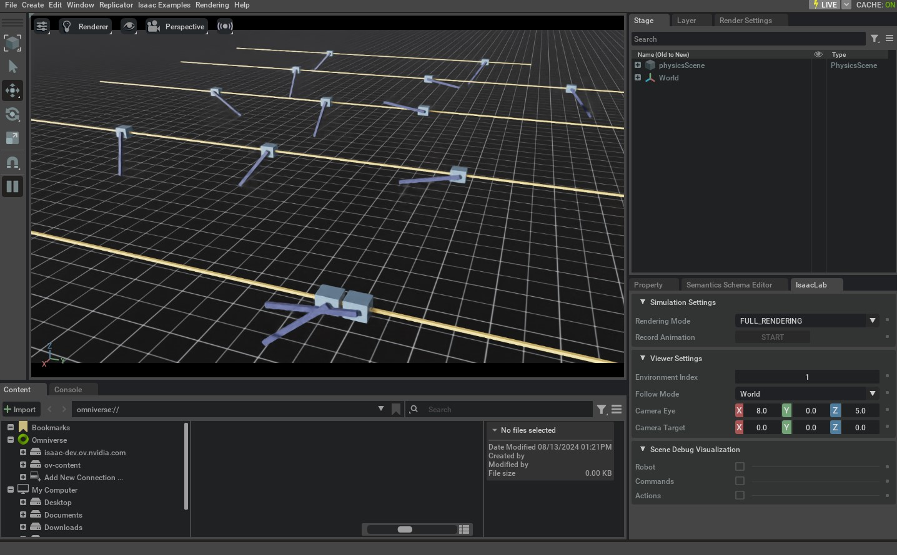

上一节创建 Cartpole Environment 时，需要直接导入 Environment Class 及其 Configuration Class，然后手动创建实例。
上一篇教程中的Environment创建
# create environment configuration
env_cfg = CartpoleEnvCfg()
env_cfg.scene.num_envs = args_cli.num_envs
env_cfg.sim.device = args_cli.device
# setup RL environment
env = ManagerBasedRLEnv(cfg=env_cfg)
这种方式适合单个示例，但难以管理大量 Environment。本教程将使用 gymnasium.register() 注册 Environment，使其能够通过 gymnasium.make() 按名称创建。
本教程中的 Environment 创建
from isaaclab_tasks.utils import parse_env_cfg
# PLACEHOLDER: Extension template (do not remove this comment)
def main():
"""Random actions agent with Isaac Lab environment."""
# create environment configuration
env_cfg = parse_env_cfg(
args_cli.task, device=args_cli.device, num_envs=args_cli.num_envs, use_fabric=not args_cli.disable_fabric
)
# create environment
1 代码
本教程对应 random_agent.py，位于 scripts/environments 目录。
代码 random_agent.py
# Copyright (c) 2022-2026, The Isaac Lab Project Developers (https://github.com/isaac-sim/IsaacLab/blob/main/CONTRIBUTORS.md).
# All rights reserved.
#
# SPDX-License-Identifier: BSD-3-Clause
"""Script to an environment with random action agent."""
"""Launch Isaac Sim Simulator first."""
import argparse
from isaaclab.app import AppLauncher
# add argparse arguments
parser = argparse.ArgumentParser(description="Random agent for Isaac Lab environments.")
parser.add_argument(
"--disable_fabric", action="store_true", default=False, help="Disable fabric and use USD I/O operations."
)
parser.add_argument("--num_envs", type=int, default=None, help="Number of environments to simulate.")
parser.add_argument("--task", type=str, default=None, help="Name of the task.")
# append AppLauncher cli args
AppLauncher.add_app_launcher_args(parser)
# parse the arguments
args_cli = parser.parse_args()
# launch omniverse app
app_launcher = AppLauncher(args_cli)
simulation_app = app_launcher.app
"""Rest everything follows."""
import gymnasium as gym
import torch
import isaaclab_tasks # noqa: F401
from isaaclab_tasks.utils import parse_env_cfg
# PLACEHOLDER: Extension template (do not remove this comment)
def main():
"""Random actions agent with Isaac Lab environment."""
# create environment configuration
env_cfg = parse_env_cfg(
args_cli.task, device=args_cli.device, num_envs=args_cli.num_envs, use_fabric=not args_cli.disable_fabric
)
# create environment
env = gym.make(args_cli.task, cfg=env_cfg)
# print info (this is vectorized environment)
print(f"[INFO]: Gym observation space: {env.observation_space}")
print(f"[INFO]: Gym action space: {env.action_space}")
# reset environment
env.reset()
# simulate environment
while simulation_app.is_running():
# run everything in inference mode
with torch.inference_mode():
# sample actions from -1 to 1
actions = 2 * torch.rand(env.action_space.shape, device=env.unwrapped.device) - 1
# apply actions
env.step(actions)
# close the simulator
env.close()
if __name__ == "__main__":
# run the main function
main()
# close sim app
simulation_app.close()
2 代码解析
envs.ManagerBasedRLEnv 继承 gymnasium.Env 并遵循其标准 Interface。与传统 Gymnasium Environment 不同，它是 Vectorized Environment：同一进程会并行运行多个 Environment 实例，所有数据均以 Batch 形式返回。
Direct Workflow 的 envs.DirectRLEnv 同样继承 gymnasium.Env。envs.DirectMARLEnv 虽不继承 Gymnasium，也可以采用相同方式注册和创建。
2.1 使用 Gymnasium Registry
使用 gymnasium.register() 注册 Environment 时，需要提供 Environment ID、Environment Class 的 Entry Point，以及 Environment Configuration Class 的 Entry Point。示例代码将 Gymnasium 导入为 gym。
笔记
该 gymnasium 注册表是一个全局注册表。因此，重要的是要确保
Environment 名称是唯一的。否则注册时注册会报错
Environment。
2.1.1 Manager-Based Environments
Manager-Based Cartpole Environment 在 isaaclab_tasks.manager_based.classic.cartpole 子 Package 中按如下方式注册：
import gymnasium as gym
from . import agents
##
# Register Gym environments.
##
gym.register(
id="Isaac-Cartpole-v0",
entry_point="isaaclab.envs:ManagerBasedRLEnv",
disable_env_checker=True,
kwargs={
"env_cfg_entry_point": f"{__name__}.cartpole_env_cfg:CartpoleEnvCfg",
"rl_games_cfg_entry_point": f"{agents.__name__}:rl_games_ppo_cfg.yaml",
"rsl_rl_cfg_entry_point": f"{agents.__name__}.rsl_rl_ppo_cfg:CartpolePPORunnerCfg",
"rsl_rl_with_symmetry_cfg_entry_point": f"{agents.__name__}.rsl_rl_ppo_cfg:CartpolePPORunnerWithSymmetryCfg",
"skrl_cfg_entry_point": f"{agents.__name__}:skrl_ppo_cfg.yaml",
"sb3_cfg_entry_point": f"{agents.__name__}:sb3_ppo_cfg.yaml",
},
)
gym.register(
id="Isaac-Cartpole-RGB-v0",
entry_point="isaaclab.envs:ManagerBasedRLEnv",
disable_env_checker=True,
kwargs={
"env_cfg_entry_point": f"{__name__}.cartpole_camera_env_cfg:CartpoleRGBCameraEnvCfg",
"rl_games_cfg_entry_point": f"{agents.__name__}:rl_games_camera_ppo_cfg.yaml",
},
)
gym.register(
id="Isaac-Cartpole-Depth-v0",
entry_point="isaaclab.envs:ManagerBasedRLEnv",
disable_env_checker=True,
kwargs={
"env_cfg_entry_point": f"{__name__}.cartpole_camera_env_cfg:CartpoleDepthCameraEnvCfg",
"rl_games_cfg_entry_point": f"{agents.__name__}:rl_games_camera_ppo_cfg.yaml",
},
)
gym.register(
id="Isaac-Cartpole-RGB-ResNet18-v0",
entry_point="isaaclab.envs:ManagerBasedRLEnv",
disable_env_checker=True,
kwargs={
"env_cfg_entry_point": f"{__name__}.cartpole_camera_env_cfg:CartpoleResNet18CameraEnvCfg",
"rl_games_cfg_entry_point": f"{agents.__name__}:rl_games_feature_ppo_cfg.yaml",
},
)
gym.register(
id="Isaac-Cartpole-RGB-TheiaTiny-v0",
entry_point="isaaclab.envs:ManagerBasedRLEnv",
disable_env_checker=True,
kwargs={
"env_cfg_entry_point": f"{__name__}.cartpole_camera_env_cfg:CartpoleTheiaTinyCameraEnvCfg",
"rl_games_cfg_entry_point": f"{agents.__name__}:rl_games_feature_ppo_cfg.yaml",
},
)
id 参数是 Environment 名称。按照约定，Isaac Lab Environment 使用 Isaac- 前缀，便于在 Registry 中检索；其后通常依次包含 Task 和 Robot 名称。例如，ANYmal C 在平坦地形上的 Locomotion Environment 名为 Isaac-Velocity-Flat-Anymal-C-v0。v<N> 表示同一 Environment 的不同版本，可避免名称过长。
entry_point 指定 Environment Class，格式为 <module>:<class>。Cartpole 的值是 isaaclab.envs:ManagerBasedRLEnv；创建 Environment 实例时，Gymnasium 会通过该字符串导入相应 Class。
env_cfg_entry_point 指定默认 Environment Configuration。isaaclab_tasks.utils.parse_env_cfg() 会加载该配置，再把它传给 gymnasium.make()。Configuration Entry Point 可以指向 YAML 文件，也可以指向 Python Configuration Class。
2.1.2 Direct Environments
Direct Environment 的注册方式相似，但 Entry Point 指向具体 Environment 实现 Class，而不是 ManagerBasedRLEnv。名称还会加入 -Direct 后缀，以便与 Manager-Based Environment 区分。
下面是 isaaclab_tasks.direct.cartpole 子 Package 中 Cartpole Environment 的注册方式：
import gymnasium as gym
from . import agents
##
# Register Gym environments.
##
gym.register(
id="Isaac-Cartpole-Direct-v0",
entry_point=f"{__name__}.cartpole_env:CartpoleEnv",
disable_env_checker=True,
kwargs={
"env_cfg_entry_point": f"{__name__}.cartpole_env:CartpoleEnvCfg",
"rl_games_cfg_entry_point": f"{agents.__name__}:rl_games_ppo_cfg.yaml",
"rsl_rl_cfg_entry_point": f"{agents.__name__}.rsl_rl_ppo_cfg:CartpolePPORunnerCfg",
"skrl_cfg_entry_point": f"{agents.__name__}:skrl_ppo_cfg.yaml",
"sb3_cfg_entry_point": f"{agents.__name__}:sb3_ppo_cfg.yaml",
},
)
gym.register(
2.2 创建 Environment
Script 开头需要导入 isaaclab_tasks Extension，让 Gymnasium Registry 获知其中提供的全部 Environment。导入会执行 __init__.py，遍历各子 Package 并完成相应注册。
import isaaclab_tasks # noqa: F401
本教程从 Command Line 读取 Task 名称，用它解析默认 Configuration 并创建 Environment。Command Line 中的 Environment 数量、Simulation Device 和是否 Rendering 等参数，也会覆盖默认配置。
# create environment configuration
env_cfg = parse_env_cfg(
args_cli.task, device=args_cli.device, num_envs=args_cli.num_envs, use_fabric=not args_cli.disable_fabric
)
# create environment
env = gym.make(args_cli.task, cfg=env_cfg)
Environment 创建完成后，其余流程遵循标准的 Reset 和 Step Interface。
3 代码执行
代码完成后，执行以下 Command 查看结果：
./isaaclab.sh -p scripts/environments/random_agent.py --task Isaac-Cartpole-v0 --num_envs 32
窗口中显示的内容与“创建 Manager-Based RL Environment”教程相似。关闭窗口或在 Terminal 中按 Ctrl+C 即可停止 Simulation。

还可以通过 --device Flag 显式选择 Simulation Device：
./isaaclab.sh -p scripts/environments/random_agent.py --task Isaac-Cartpole-v0 --num_envs 32 --device cpu
传入 --device cpu 后，Simulation 在 CPU 上运行，便于 Debugging，但速度会明显慢于 GPU Simulation。